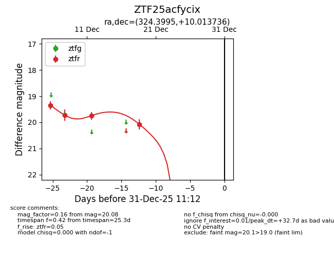
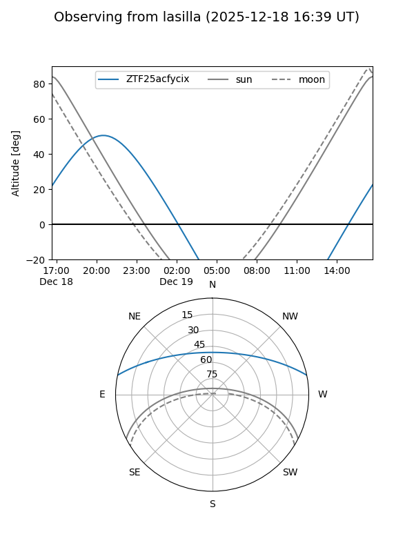
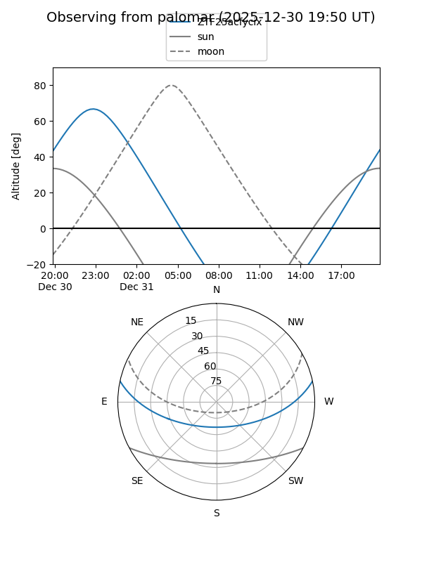

ZTF25acfycix
Target ZTF25acfycix at 2025-12-18 11:17
Aliases and brokers:
FINK: fink-portal.org/ZTF25acfycix
Lasair: lasair-ztf.lsst.ac.uk/objects/ZTF25acfycix
ALeRCE: alerce.online/object/ZTF25acfycix
alt names
ZTF25acfycix (ztf,fink_ztf)
Coordinates:
equatorial (ra, dec) = 324.3995,+10.01374
equatorial (HMS+DMS) = 21:37:35.89,+10:00:49.45
galactic (l, b) = (64.4795,-30.12648)
Photometry
last ztfr=19.75
3 ztfr detections
Lightcurve

Visibility


Additional plots